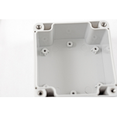

Project template containing the recommended board layout for Hammond Manufacturing RZ0203:
Beige, Clear Lid: RZ0308C - 164-RZ0308C-ND
Beige: RZ0308 - 164-RZ0308-ND
Beige, Clear Lid: RZ0304C - 164-RZ0304C-ND
Beige: RZ0304 - 164-RZ0304-ND
Gray, Clear Lid: RZ0205C - 164-RZ0205C-ND
White, Off: RZ0205 - 164-RZ0205-ND
Gray, Clear Lid:RZ0203C - 164-RZ0203C-ND
White, Off: RZ0203 - 164-RZ0203-ND
|
|
 |
The "Dwgs.User" layer contains all critical dimmensions in milimeters[inches].
The "Edge.Cuts" layer contains the maximum board outline and holes to align with board standoffs.
PCB Preview: